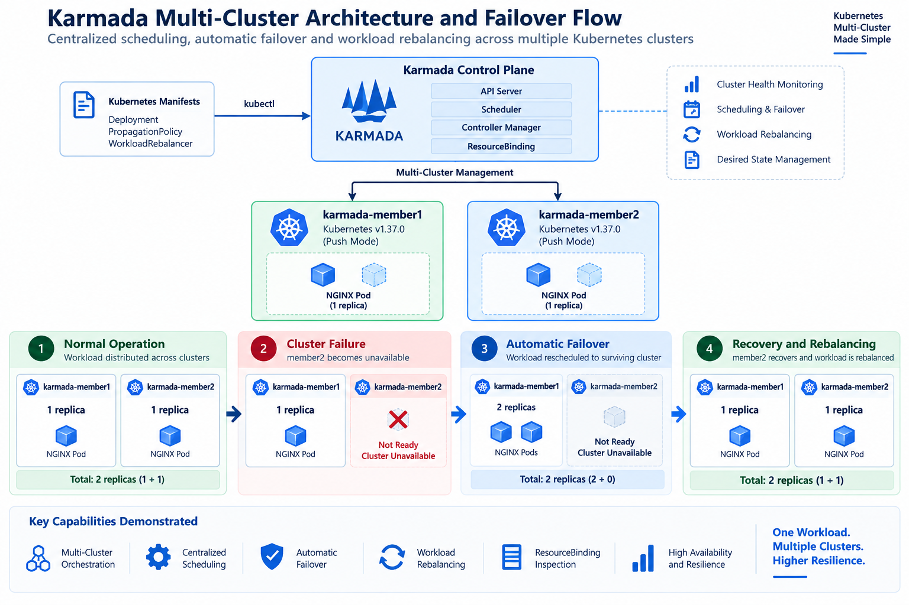

CASE STUDY • KUBERNETES • MULTI-CLUSTER
Kubernetes Multi-Cluster com Karmada: Failover, Recovery e Workload Rebalancing
Laboratório prático para validar distribuição de workloads, resiliência entre clusters Kubernetes e recuperação de aplicações utilizando Karmada.
01 — Contexto
Ambientes Kubernetes distribuídos entre múltiplos clusters introduzem desafios relacionados a scheduling, disponibilidade, recuperação de falhas e redistribuição de workloads.
Este laboratório foi criado para validar, de forma prática, o comportamento do Karmada na administração centralizada de workloads executados em dois clusters Kubernetes independentes.
02 — Objetivo
Demonstrar o ciclo completo de uma aplicação multi-cluster: distribuição inicial, indisponibilidade de um cluster, failover para o cluster saudável, recuperação e posterior rebalanceamento das réplicas.
03 — Arquitetura
O ambiente utiliza um Karmada Control Plane responsável pelo gerenciamento de dois clusters Kubernetes registrados em Push Mode.

04 — Distribuição Inicial
A aplicação NGINX foi configurada com duas réplicas e uma PropagationPolicy utilizando weighted replica scheduling.
karmada-member1 replicas=1
karmada-member2 replicas=1Dessa forma, cada cluster mantinha uma réplica da aplicação durante a operação normal.
05 — Cluster Failover
A indisponibilidade do karmada-member2 foi simulada para validar o comportamento de failover.
Após detectar a falha, o Karmada recalculou o ResourceBinding e direcionou as duas réplicas para o cluster saudável.
karmada-member1 replicas=2A quantidade desejada de réplicas foi preservada mesmo com um dos clusters indisponível.
06 — Recovery & Rebalancing
Após a recuperação do segundo cluster, ambos voltaram ao estado saudável. A recuperação do cluster, entretanto, não implica automaticamente a restauração da distribuição original.
Um WorkloadRebalancer foi utilizado para solicitar um novo scheduling do workload.
karmada-member1 replicas=1
karmada-member2 replicas=1O ambiente retornou à distribuição inicial, com uma réplica saudável em cada cluster.
07 — Fluxo Validado
Normal Operation
|
v
member1 = 1 member2 = 1
|
| member2 failure
v
Karmada detects failure
|
v
ResourceBinding recalculated
|
v
member1 = 2
|
| member2 recovery
v
WorkloadRebalancer
|
v
member1 = 1 member2 = 108 — Resultados
- Orquestração Kubernetes multi-cluster.
- Distribuição ponderada de réplicas.
- Monitoramento da saúde dos clusters.
- Failover automático do workload.
- Preservação da quantidade desejada de réplicas.
- Recuperação do member cluster.
- Workload rebalancing após recovery.
- Validação do ResourceBinding do Karmada.
09 — Tecnologias
10 — Projeto no GitHub
Os manifests, documentação do teste de failover e arquitetura utilizada neste laboratório estão disponíveis publicamente no GitHub.